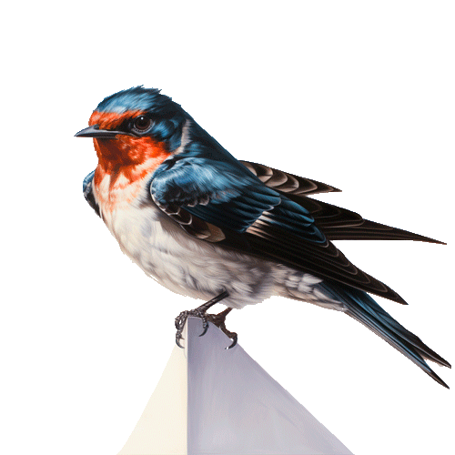
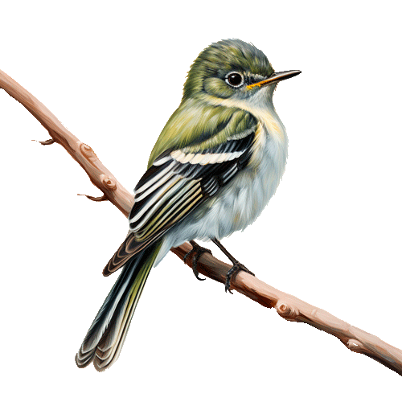
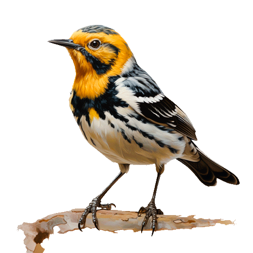
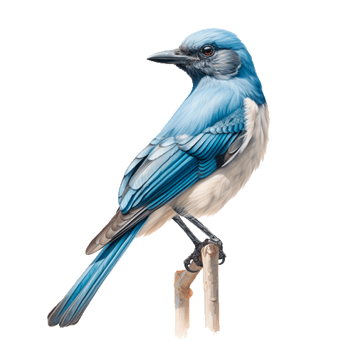
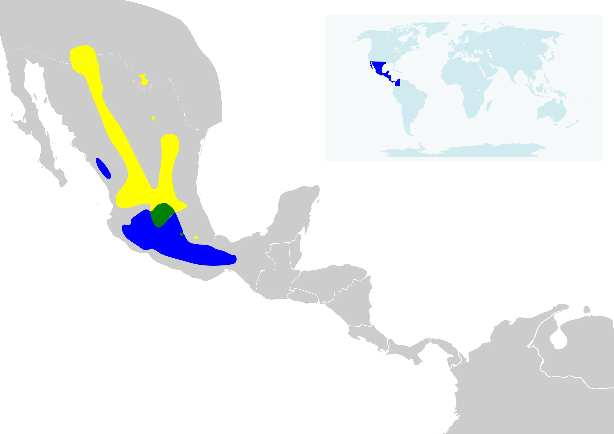

Golondrina Verdeazul

Golondrina Tijereta
Colibrí Lucifer
Chipe Mejilla Dorada
Chara Pecho Gris
Mosquero Cordillerano
Nombre científico
Empidonax difficilis
Residencia
Canadá, Estados Unidos y el norte de México.
Vulnerabilidad
Olas de calor: Durante la primavera experimentan temperaturas peligrosas para las crías que se encuentran en
los nidos.
Lluvias intensas: Impide a las aves adultas alimentar a sus crías.
Dimorfismo
Las aves adultas tienen dorso oliva gris, más oscuro en las alas y la cola, con el vientre amarillento;
tienen un anillo
ocular blanco visible en forma de lágrima, barras blancas en las alas, y una cola corta.
¿Por qué emigran?
Suele viajar de Canadá y Estados Unidos para invernar en México.
Las aves migratorias están en la costa occidental de Jalisco, hacia el norte, y luego a las regiones del
interior, en un
corredor en el flanco occidental de la Sierra Madre Occidental.
Época de migración
Suelen viajar en primavera y otoño por la Ciudad de México.
Datos curiosos
Se alimentan de insectos.
Las hembras ponen de 2 a 5 huevos.
¡Escúchalo cantar!
Golondrina Verdemar
Nombre científico
Tachycineta thalassina
Residencia
Se encuentra en norteamérica, pues nidifica en bosques abiertos, montañas y poblados. Hacen nidos en
diversos hábitats,
principalmente en lugares semiabiertos, como bosquecillos de álamos, bosques de pinos, paredes de cañones y,
a veces, en
praderas abiertas.
Vulnerabilidad
Los incendios forestales
Olas de calor: En primavera ponen en peligro a las crías que se encuentran en los nidos.
Dimorfismo
Con espalda púrpura y verde (oscura en pobre condición lumínica), blanco abajo.
Las hembras y los inmaduros son más opacos en la espalda, pueden ser gris oscuro.
El blanco de la mejilla que se extiende sobre el ojo y el blanco en los lados de la rabadilla.
¿Por qué emigran?
Emigran por motivos de temperatura, pues pasan el invierno en América central y al norte de Sudamérica.
Además, durante
la migración frecuenta lugares cerca del agua, como riberas de ríos, lagos y costas.
Época de migración
Migran a principio de la primavera y regresan al suroeste en grandes cantidades en febrero hacia el norte. A
menudo se
encuentran cerca del agua.
Datos curiosos
No está globalmente amenazado.
Se alimenta de diversos insectos voladores, como moscas, chinches del campo, avispas, hormigas voladoras,
abejas
silvestres, escarabajos, polillas y muchos insectos más.
Ambos padres alimentan a las crías, aunque la hembra trabaja más.
Las crías abandonan el nido 23 o 24 días después de la eclosión.
Los adultos continúan alimentando a las crías durante un tiempo después de abandonar el nido.
Hacen una nidada por año, a veces, dos.
Golondrina Tijereta
Nombre científico
Hirundo rustica
Residencia
Habita en Europa, Asia, África, América y parte de Australasia.
Su hábitat preferido son los campos abiertos con vegetación baja; como pasturas, prados y terrenos
agrícolas,
preferentemente con agua en las cercanías. Esta golondrina evita áreas de vegetación densa, empinadas o muy
urbanizadas.
Vulnerabilidad
Aves depredadoras, como numerosas especies de falcónidos y accipítridos (halcones, águilas, buitres, azores
y gavilanes).
Dimorfismo
No existe diformismo sexual.
¿Por qué emigran?
Viaja para hibernar y reproducirse. Esta ave migratoria tiene la mayor área de distribución en el
mundo.
Época de migración
En México la migración es común durante la primavera, para montar sus nidos en los techos y paredes de las
casas en la
Ciudad de México; y emigran hacia el sur a mediados de agosto.
Datos curiosos
Las hembras prefieren a los machos con la cola más larga y simétrica.
Cuando alimentan a sus crías, las golondrinas llevan varios insectos al nido a la vez, empacándolos en una
bola que le
dan a sus crías.
Un par de golondrinas pueden traer hasta 400 comidas separadas cada día para sus crías.
Colibrí Lucifer
Nombre científico
Calothorax lucifer
Residencia
Sierra Madre Oriental (San Luis Potosí, Zacatecas, Durango, Coahuila de Zaragoza, Nuevo León, Tamaulipas,
Guanajuato,
Querétaro de Arteaga, Hidalgo, Puebla y Veracruz).
Sierra Madre Occidental (Chihuahua, Sonora, Sinaloa, Durango, Zacatecas, Nayarit y Jalisco).
No sale de México, pues se reproduce en la Sierra Madre Oriental y Occidental, pasa el invierno en el sur
del país, en
la Cuenca del Balsas (Jalisco, Michoacán, Estado de México, Guerrero, Morelos, Tlaxcala, Oaxaca y Puebla).

VulnerabilidadOlas de calor: En primavera, ponen en peligro a las crías que se encuentran en los nidos.
Dimorfismo
Colibrí pequeño con el pico largo y curvo. En el caso de los machos, es mayoritariamente verdoso con el vientre más pálido, una garganta púrpura iridiscente y una cola larga bifurcada. Las hembras poseen verde encima y la garganta, ceja y vientre de color beige. Todas las edades y sexos se identifican más fácilmente por la forma del pico.
¿Por qué emigran?
Algunas poblaciones se reproducen durante el verano en el suroeste de Estados Unidos y antes de la llegada del invierno, migran hacia diversas regiones del centro y sur de México, en busca de condiciones climáticas similares a las del verano.
Época de migración
Las aves del suroeste de Estados Unidos se trasladan a la región central y sur de México durante el verano.
Datos curiosos
El colibrí lucifer no forma vínculos de pareja y probablemente es polígamo.
La hembra alimenta a las crías.
El primer vuelo ocurre entre los 19 y los 24 días de edad.
Puede incubar dos nidadas por año.
Se alimenta de néctar de flores e insectos.
También se alimenta de mezclas a base agua y azúcar en comederos para colibríes.
¡Escúchalo cantar!
Chipe Mejilla Colorada
Nombre científico
Setophaga chrysoparia
Residencia
Texas, Estados Unidos. Es el único lugar del mundo en el que nidifica, principalmente en el altiplano
Edwards. Regresa
al inicio de la primavera y pasa el invierno en las montañas de Chiapas, Guatemala y El Salvador.
Vulnerabilidad
Se considera en peligro de extinción porque los bosques donde anida se han reducido para el aprovechamiento
de madera,
el clareo para áreas de pastoreo, o la inundación por la construcción de presas.
a) Sequías: Limitan el agua y los recursos alimenticios de muchas especies.
b) Olas de calor: En primavera, ponen en peligro a las crías que se encuentran en los nidos.
c) Las ciudades: Destruyen los hábitats de las aves y a menudo se encuentran en sitios que las aves
necesitan.
Dimorfismo
Los machos adultos son de cara amarilla con una raya transocular negra. Las partes dorsales (desde la frente
hasta la
cola), la garganta y el pecho son negros, con dos rayas blancas en cada ala y algunas plumas blancas en la
cola.
Tanto el vientre como los flancos son blancos, con algunas manchas negras.
Las hembras son similares al macho, pero con las partes dorsales oliváceas con rayas negruzcas y garganta y
pecho
amarillentos.
Los individuos juveniles resultan similares a las hembras adultas
¿Por qué emigran?
Al anidar en el centro de Texas, prefiere áreas boscosas de enebros y encinas, y se alimenta sobre todo de
insectos,
larvas y arácnidos.
Época de migración
Migra en otoño a lo largo de la Sierra Madre Occidental para finalmente pasar el invierno en el estado
mexicano de
Chiapas, Guatemala, Honduras y norte de Nicaragua, en altitudes medias a elevadas y con áreas boscosas
húmedas. Vuelve a
Texas a inicios de marzo.
Datos curiosos
Tanto machos como hembras alimentan a las crías.
Las crías abandonan el nido entre 11 y 13 días después de la eclosión.
Los padres dividen a las crías, cada adulto cuida a la mitad de ellas durante 4 o 5 semanas.
Chara Pecho Gris
Nombre científico
Aphelocoma wollweberi
Residencia
Bosques abiertos de roble (Arizona), bosques de roble y pino (Texas). En Arizona, se encuentra en diferentes
bosques de
roble y en cuestas más bajas de montañas.
En México se encuentra en bosques diversos con abundantes pinos y robles. Desde Baja California, por la
Sierra Madre
Oriental y Occidental, hasta el sur de Puebla y Oaxaca.

Sequías: Destruyen el agua y los recursos alimenticios.
Incendios forestales: Si los bosques se incendian en forma reiterada, no logran recuperarse.
Las olas de calor: En primavera ponen en peligro a las crías que se encuentran en los nidos.
Dimorfismo
Es un córvido azul en el área de la cabeza y alas; además de la cola, el dorso es de color café oscuro, la garganta es rayada hasta la parte superior del pecho, el vientre es claro a grisáceo. Los sexos son similares. Y los juveniles no tienen tan definido el patrón de la cabeza.
¿Por qué emigran?
Casi nunca se aleja de su territorio inmediato de reproducción: es una de las especies de aves más sedentarias de América del Norte.
Época de migración
No encontrado, (Se pregunta en entrevista)
Datos curiosos
En México esta especie se encuentra permitida para aprovechamiento comercial como ave de ornato; por lo tanto, es nula la presión hacia esta especie.
Tiene un riesgo bajo de peligro de extinción.
Se alimenta en la zona de frutas, insectos y semillas, además de reptiles, huevos y polluelos de otras especies de aves. Recibe el nombre local de Cutavia.
¡Escúchalo cantar!
×
×